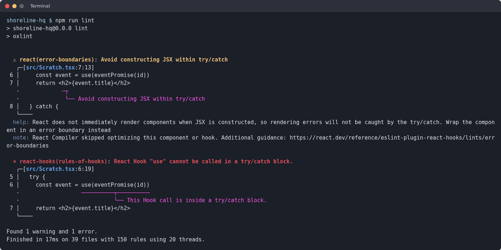
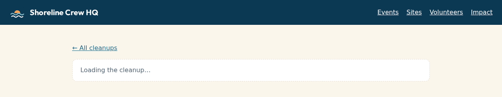

⏳ Lesson 4.4: Suspense, use() and Error Boundaries
Every page in Shoreline Crew HQ carries the same bookkeeping: is it loading, did it fail, is it ready? Each component asks those questions itself, with a LoadState and a ternary. React has a second way to handle waiting and failing, where a component simply reads its data as if it were already there, and boundaries further up the tree decide what people see in the meantime or when something breaks. Today you learn that way and use it where it fits: a page of its own for every cleanup, a loading boundary, and error boundaries that tell people what happened and give them a way forward, including one that keeps a crashing page from taking the whole app down with it.
🎯 Learning Objectives
By the end of this lesson, you will be able to:
- Explain what Suspense does and where a
<Suspense>boundary belongs in a component tree - Read a promise while rendering with
use(), typed, and keep the promise stable so it is not requested again on every render - Write a typed error boundary as a class component, and say which errors it catches and which it does not
- Design fallbacks that help people: a clear message, "not found" told apart from "could not load", and a Try again that really tries again
- Judge where Suspense belongs in a single-page app today, and what React Router (Module 6) and TanStack Query (Module 7) take over later
📦 Code for this lesson
Starting code: lesson-16-start.zip · Finished code: lesson-16-end.zip. Each folder has a README with the commands to run it. Copy .env.example to .env.local in shoreline-hq before npm run dev.
In This Lesson
⏳ Waiting Without the Bookkeeping
Look at how the HQ's sites page decides what to show (Lesson 4.2):
{sites.state.kind === 'ready' ? (
<div className={styles.grid}>
{sites.state.data.map((site) => (
<SiteCard key={site.id} site={site} />
))}
</div>
) : (
<LoadStatus state={sites.state} what="the beach sites" onRetry={sites.reload} />
)}It works, and it is honest: the type LoadState<Site[]> forces the page to think about all three cases. But every page repeats the same question, and every page answers it slightly differently. The component that wants to show sites has to know about loading and failing too.
Suspense splits those jobs. A component reads its data as if it were already there. If the data has not arrived, the component suspends: React stops rendering it and shows the fallback of the nearest <Suspense> boundary above it instead. If loading fails, the error travels up to the nearest error boundary, which shows its own fallback. The component in the middle only ever handles the happy path.
💡 Mental model: the sign-in table
On cleanup morning, volunteers do not each work out what to do while the crew lead unloads the van. They wait at the sign-in table, where one person says "we start in ten minutes, grab a coffee". That table is a Suspense boundary: one place that handles waiting for everyone behind it. And when the tide is too high to start, the lead does not let each volunteer find out alone; one announcement at the table says what happened and what comes next. That is the error boundary. The volunteers (your components) just do the cleanup when it starts.
Here is the tree you will build for a cleanup's own page. Read it from the bottom: EventDetails reads the cleanup; the Suspense above it covers the wait; the ErrorBoundary above that covers failure; and one more boundary at the top of the app catches pages that crash.
💡 Why this matters
Loading and error states are where apps feel broken. A blank screen, a spinner that never stops, or a raw "TypeError" tells people nothing. Teams that use React today meet Suspense and error boundaries in every data library and router they pick, and code reviews ask "what does the user see while this loads, and when it fails?" Knowing how the boundaries work underneath lets you answer that, whichever library the team uses.
📬 use(): Reading a Promise While Rendering
React 19's use reads the value of a promise during rendering. Pass it a promise; it gives you what the promise resolves to. Try it as src/Scratch.tsx (this lesson's experiment file), shown by temporarily making return <SiteCountDemo /> the first line of CurrentPage in App.tsx:
import { Suspense, use } from 'react'
import { getSites } from './api/client.ts'
// Started once, when this file is first imported: every render gets the same promise
const sitesPromise = getSites()
function SiteCount() {
const sites = use(sitesPromise) // Site[]: the promise's value, once it has arrived
return <p>The crew looks after {sites.length} beach sites.</p>
}
export function SiteCountDemo() {
return (
<Suspense fallback={<p>Counting the beach sites…</p>}>
<SiteCount />
</Suspense>
)
}Measured on the dev server: the page first said "Counting the beach sites…", then "The crew looks after 6 beach sites.", with one request to /api/sites. Three things happened:
SiteCountrendered and calleduse(sitesPromise). The promise was still pending, sousesuspended the component: React put it aside and showed the boundary's fallback.- React waited for the promise. When it resolved, React rendered
SiteCountagain. - This time
use(sitesPromise)returned the sites at once, and the paragraph appeared.
The types
use is generic: its declaration in React's types is use<T>(usable: Usable<T>): T, where a "usable" is a promise (or a context, Lesson 5.2). TypeScript infers T from the promise, so nothing needs annotating. Measured with this course's setup (making tsc print each type):
| You write | The value's type |
|---|---|
use(getSites()) | Site[] |
eventPromise('e08') (this lesson's project) | Promise<CleanupEventDetail> |
use(eventPromise('e08')) | CleanupEventDetail |
Notice what is missing: no | undefined, no LoadState. Inside the component the data is simply there, because the component never runs to the end without it. That is the trade: the waiting and failing move out of the component and into the boundaries above.
Two rules that come with it
- The promise must be the same promise on every render. A component that suspends is rendered again later, from the top. If it creates a new promise each time (
use(getEvent(id))), the new promise is pending again, so it suspends again, forever. The demo above starts its promise once, outside the component. The project keeps one promise per cleanup in a small cache. Common Mistakes shows what happens otherwise (it is dramatic). useis not called insidetry/catch. Unlike other Hooks it may sit inside anifor a loop, but errors from it belong to an error boundary. The linter enforces this rule.
🧩 Version note: use() is new in React 19
Before React 19, the only way for a component to "wait" for data with Suspense was to use a library that threw promises in a special way. use() made it a public React API. Older articles about "Suspense for data fetching" describe experimental APIs that never shipped; when you read about Suspense, check that the article covers React 19.
🧱 Suspense Boundaries
<Suspense fallback={…}> is a component that wraps part of the tree. While anything inside it is suspended, React shows the fallback in its place; when everything inside is ready, React shows the children. A few things follow from that:
- Everything outside the boundary stays on the screen. In the project, the header and the "← All cleanups" link sit above the boundary, so they appear at once and only the cleanup's part waits (the screenshot in Step 6 shows it).
- The nearest boundary wins. Put a boundary around each part of the page that can load on its own, and each part shows its own fallback. One boundary around several components waits for all of them and then shows them together.
- No boundary at all means the whole app waits. Measured: with the project's
Suspenseremoved and the API slowed down, the page's#rootstayed completely empty (no header, nothing) until the cleanup arrived. The app's root acts as the last boundary, and its "fallback" is nothing.
The fallback is an ordinary React element, so it can be the same message the rest of the HQ uses. The project passes LoadStatus a loading state, which gives the familiar "Loading the cleanup…" box with role="status" for screen readers.
What can make a component suspend?
| Suspends | Where you meet it |
|---|---|
use(promise) on a pending promise | today |
A component loaded with lazy(() => import(…)) whose code has not arrived yet | Lesson 10.1 (code splitting) |
Data libraries' Suspense Hooks, such as TanStack Query's useSuspenseQuery | Lesson 7.1 |
A plain useEffect + useState fetch, like useApi, does not suspend: the component renders with a loading state instead. That is why the HQ's other pages keep working exactly as before.
🛟 Error Boundaries
When a component throws an error while rendering, React has nothing to show for that part of the tree. Without help, React 19 removes the whole app from the page. Measured: a test crash in one site card left #root empty, header and footer included, with only "Test crash" in the console. One broken card, and people see a blank page.
An error boundary is a component that catches errors thrown while rendering the components inside it, and shows a fallback instead. Rejected promises read with use() count: use throws the rejection's error, so a failed request lands in the nearest error boundary, just like a bug.
| The error is thrown… | Caught by an error boundary? |
|---|---|
| while a component inside renders (a bug, bad data) | yes |
by use(promise), because the promise rejected | yes |
in an event handler such as onClick | no: the screen does not depend on it, so React leaves the page as it is |
in async code: setTimeout, a .then in an effect | no: handle it there (useApi catches its own errors) |
| in the error boundary itself | no: the next boundary up catches it |
The first and third rows were measured with this demo (it uses the ErrorBoundary you build in the project, so try it after Step 3):
import { useState } from 'react'
import { ErrorBoundary, type FallbackProps } from './components/ErrorBoundary.tsx'
function Caught({ retry }: FallbackProps) {
return (
<p>
The boundary caught it.{' '}
<button type="button" onClick={retry}>
Try again
</button>
</p>
)
}
function CrashButtons() {
const [broken, setBroken] = useState(false)
if (broken) {
throw new Error('Thrown while rendering')
}
return (
<>
<button
type="button"
onClick={() => {
throw new Error('Thrown in a click handler')
}}
>
Throw in a click handler
</button>
<button type="button" onClick={() => setBroken(true)}>
Throw while rendering
</button>
</>
)
}
export function CrashDemo() {
return (
<ErrorBoundary fallback={Caught}>
<CrashButtons />
</ErrorBoundary>
)
}Clicking Throw in a click handler printed "Uncaught Error: Thrown in a click handler" in the console and changed nothing on the page: both buttons stayed. Clicking Throw while rendering made the next render throw, and the boundary replaced the buttons with "The boundary caught it." Its Try again rendered the children again, and the buttons were back (the state that broke them was thrown away with the old components).
Why a class component?
Every component in this course so far has been a function. Error boundaries are the exception: React 19.3 still has no Hook for catching errors (measured: the react package exports nothing of the kind), so a boundary is written as a class component, the older style of React component. You only need a small part of it. Here is the shape, which Step 3 builds line by line:
| Class piece | What it does | Function-component cousin |
|---|---|---|
class X extends Component<Props, State> | a component with typed props and state | function X(props: Props) |
state: State = { … } | the starting state | useState(…) |
static getDerivedStateFromError(error) | React calls it when a child throws; it returns the new state | none: this is why classes are needed |
this.setState({ … }) | changes state and renders again | the setter from useState |
render() | returns the JSX, reading this.props and this.state | the function body |
Write it, or install it?
Many teams install react-error-boundary (version 6.1.6 when this lesson was checked) instead of writing the class. It is small and well made. Measured on the HQ's build: swapping this lesson's class for the library added 1.16 kB to the JavaScript (0.40 kB gzipped). Size does not decide it either way. This course writes its own boundary, for three reasons: it is about 40 lines you can read completely; writing it once teaches you what any boundary does; and the HQ needs only the basics (a fallback and a retry). If you later need its extras, such as resetting when a value changes (resetKeys) or sending an event handler's error to the boundary (useErrorBoundary), the library is a good choice, and your fallbacks will move over almost unchanged.
💡 React still reports what it caught
A caught error is not a hidden error. Measured on the dev server and on the build: when the boundary showed its fallback, React also logged the error in the browser console. In a real app, createRoot's onCaughtError and onUncaughtError options (both in React 19's types) are where you would send errors to a monitoring service instead. The HQ keeps React's default.
🗺️ Where Suspense Fits in This App
Suspense and use() are powerful, but the HQ will not rewrite every page around them today, and it is worth being clear about why. The hard part of use() is not the Hook; it is where the promise comes from. Someone has to start the request, keep the promise so every render gets the same one, decide when it is stale, and forget it after an error. That "someone" is a cache, and caches are exactly what the next modules bring:
| Lesson | What changes for the event page | What stays |
|---|---|---|
| 4.4 (today) | a ten-line cache, eventPromises.ts, keeps one promise per cleanup while the page is open | |
| 6.1 React Router | the router picks the page and reads eventId from the URL; routes get their own error elements | Suspense, ErrorBoundary, EventDetails |
| 6.3 Loaders | a route's loader can start the request when the link is followed, before the page even renders | the same |
| 7.1 TanStack Query | eventPromises.ts goes: Query's cache keeps, refreshes and forgets data for every request in the app | the boundaries and the fallbacks |
So today's cache is deliberately small and temporary, and today's boundaries are the part that lasts. The other pages stay on useApi until Lesson 7.1, for a concrete reason too: the events page keeps the old results on screen while a new search loads (Lesson 4.2). A page that suspended on every new search would swap the whole list for "Loading…" at each keystroke, unless you also brought in transitions, a topic for Lesson 7.1.
⚠️ Common Mistakes
⚠️ A new promise on every render
The most natural first try:
import { Suspense, use } from 'react'
import { getEvent } from './api/client.ts'
function EventTitle({ id }: { id: string }) {
const event = use(getEvent(id)) // a NEW promise every time this component renders
return <h2>{event.title}</h2>
}
export function UncachedDemo() {
return (
<Suspense fallback={<p>Loading the cleanup…</p>}>
<EventTitle id="e08" />
</Suspense>
)
}npx tsc -b and npm run lint are both clean. In the browser, the page says "Loading the cleanup…" forever. Measured on the dev server: in three seconds the browser sent well over a thousand requests for /api/events/e08 and never showed the title. Every render made a new pending promise, so every render suspended, and every resolved promise triggered a render that made another one. Keep promises outside rendering: start them once (the SiteCount demo), or ask a cache for them (eventPromise(id) in the project).
⚠️ Catching use() with try/catch
It looks like ordinary error handling:
function EventTitle({ id }: { id: string }) {
try {
const event = use(eventPromise(id))
return <h2>{event.title}</h2>
} catch {
return <p>Could not load the cleanup.</p>
}
}
use().The linter stops it with an error, and the browser shows why it is wrong. Measured: the page jumped straight to "Could not load the cleanup." while the request was still on its way, and React logged "`use` was called from inside a try/catch block. This is not allowed and can lead to unexpected behavior." use suspends by throwing, so the catch caught the waiting, not a failure. Remove the try; put an error boundary around the component instead.
⚠️ Forgetting static on getDerivedStateFromError
Write getDerivedStateFromError(error: unknown) without static and npx tsc -b and npm run lint both pass. But React only looks for it on the class itself, so the boundary never catches anything. Measured with the click demo: Throw while rendering emptied #root completely, and React's console said "getDerivedStateFromError() is defined as an instance method and will be ignored. Instead, declare it as a static method." When a boundary does nothing, check for that console message first.
⚠️ A Try again that tries nothing
A rejected promise stays rejected. If the boundary's retry renders the children again but the cache still holds the failed promise, use throws the same error at once. Measured: with onRetry removed from the project's EventPage, starting the API and pressing Try again sent no request at all and showed "Could not load this cleanup" again. The project's boundary calls forgetEvent(id) before retrying, so the next render asks the API.
🛠️ Project: A Page for Every Cleanup
At the end of this project, every cleanup's title on /events links to its own page (/events/e08 for Weekend Cove Cleanup). The page reads the cleanup with use() inside Suspense; an error boundary tells "not found" apart from "could not load" and offers Try again; and a second boundary around every page keeps a crash from blanking the app.
Start both servers (node server.ts in shoreline-api, npm run dev in shoreline-hq) and delete src/Scratch.tsx (and the line you added to CurrentPage) if you still have them.
Step 1: Fetch one cleanup (8 min)
GET /api/events/e08 returns a CleanupEventDetail: a CleanupEvent plus its whole site (see src/api/types.ts). In src/api/client.ts, import the type:
CleanupEvent,
+ CleanupEventDetail,
ErrorCode,add a check under isSite:
/** A cleanup as GET /api/events/:id sends it: a CleanupEvent plus its whole site */
export function isCleanupEventDetail(value: unknown): value is CleanupEventDetail {
return isCleanupEvent(value) && 'site' in value && isSite(value.site)
}and a function at the end of the file:
/** One cleanup with its site. An unknown id (or a draft) is an ApiError with status 404. */
export function getEvent(id: string, signal?: AbortSignal): Promise<CleanupEventDetail> {
return getJSON(`/events/${encodeURIComponent(id)}`, isCleanupEventDetail, signal)
}- The check reuses what you have:
isCleanupEventfor the event's fields andisSitefor the site. - Why
'site' in value? AfterisCleanupEvent(value), TypeScript knowsvalueis aCleanupEvent, which has nosite. Leave theincheck out and tsc says so:
Expected output (npx tsc -b)
src/api/client.ts:69:48 - error TS2339: Property 'site' does not exist on type 'CleanupEvent'.
69 return isCleanupEvent(value) && isSite(value.site)
~~~~
Found 1 error in src/api/client.ts:69The in operator narrowing from Lesson 2.2 adds "and it has a site property" to the type, so value.site can be read (as unknown) and handed to isSite.
encodeURIComponent(id)keeps an id from the address bar from changing the path: the id ends up in the URL exactly as one path segment.- An unknown id, and a draft (drafts are only for signed-in organizers), come back as 404.
request()already turns that into anApiErrorwithstatus404 (Lesson 4.1), which the page will recognize.
Step 2: Keep one promise per cleanup (6 min)
Create src/api/eventPromises.ts, the small cache use() needs:
// One promise per cleanup, kept for as long as the page is open (Lesson 4.4).
// use() needs the SAME promise on every render; a new one each time would start over.
// Temporary: TanStack Query keeps a cache like this for every request in Lesson 7.1.
import { getEvent } from './client.ts'
import type { CleanupEventDetail } from './types.ts'
const saved = new Map<string, Promise<CleanupEventDetail>>()
/** The cleanup with this id: the first call starts the request, later calls get the same promise */
export function eventPromise(id: string): Promise<CleanupEventDetail> {
let promise = saved.get(id)
if (promise === undefined) {
promise = getEvent(id)
saved.set(id, promise)
}
return promise
}
/** Forget a saved promise (after an error), so the next eventPromise(id) asks the API again */
export function forgetEvent(id: string): void {
saved.delete(id)
}- A
Map<string, Promise<CleanupEventDetail>>at module level lives as long as the page is open, outside any component, so every render (and Strict Mode's second render) gets the same promise. Measured on the dev server: one request for/api/events/e08, not two. let promise = saved.get(id)isPromise<CleanupEventDetail> | undefined; after theifTypeScript knows it is a promise, so the return type checks.- The cache never notices that data changed on the server. Today that is fine: every link in the HQ still loads a whole new page (until Lesson 6.1), and nothing edits cleanups yet (Lesson 7.2). Lesson 7.1 replaces this file with TanStack Query, which handles exactly that.
- No
AbortSignalthis time: the promise is shared, so no single component may cancel it.
Step 3: A typed ErrorBoundary (12 min)
Create src/components/ErrorBoundary.tsx:
import { Component, type ComponentType, type ReactNode } from 'react'
/** What a fallback gets: the error that was thrown, and a way to try the children again */
export interface FallbackProps {
error: unknown
retry: () => void
}
interface ErrorBoundaryProps {
/** The component shown instead of the children after one of them throws while rendering */
fallback: ComponentType<FallbackProps>
/** Runs before a retry: undo whatever made it fail (a saved promise, for example) */
onRetry?: () => void
children: ReactNode
}
type ErrorBoundaryState = { failed: false } | { failed: true; error: unknown }
// React has no Hook for catching errors yet, so an error boundary is a class component.
export class ErrorBoundary extends Component<ErrorBoundaryProps, ErrorBoundaryState> {
state: ErrorBoundaryState = { failed: false }
// React calls this when a child throws while rendering; the result becomes the new state
static getDerivedStateFromError(error: unknown): ErrorBoundaryState {
return { failed: true, error }
}
// An arrow function keeps `this` pointing at the boundary when a button calls it
retry = () => {
this.props.onRetry?.()
this.setState({ failed: false })
}
render() {
if (this.state.failed) {
const Fallback = this.props.fallback
return <Fallback error={this.state.error} retry={this.retry} />
}
return this.props.children
}
}- Props.
fallbackis a component (ComponentType<FallbackProps>): the boundary renders it with the error and aretryfunction. Passing a component rather than ready-made JSX means the fallback can read the error and use Hooks of its own.onRetrylets the parent undo whatever made it fail before the children render again. - State as a discriminated union (Lesson 2.2). Only the
failed: truecase has anerror, sothis.state.errorcan only be read after checkingthis.state.failed, asrenderdoes. The error isunknown: JavaScript can throw anything, not onlyErrorobjects. - The state field needs its type. Write
state = { failed: false }and TypeScript infers the narrower{ failed: boolean }for the field, which no longer fits the class's declared state:
Expected output (npx tsc -b, first lines)
src/components/ErrorBoundary.tsx:21:3 - error TS2416: Property 'state' in type 'ErrorBoundary' is not assignable to the same property in base type 'Component<ErrorBoundaryProps, ErrorBoundaryState, any>'.
Type '{ failed: boolean; }' is not assignable to type 'Readonly<ErrorBoundaryState>'.
Property 'error' is missing in type '{ failed: boolean; }' but required in type 'Readonly<{ failed: true; error: unknown; }>'.
21 state = { failed: false }
~~~~~
src/components/ErrorBoundary.tsx:17:63 - 'error' is declared here.
17 type ErrorBoundaryState = { failed: false } | { failed: true; error: unknown }static getDerivedStateFromErroris the piece only classes have. React calls it on the class when a child throws during rendering; its return value becomes the boundary's state, and the next render shows the fallback. The: ErrorBoundaryStatereturn type matters: React's types do not check a static method for you (measured: without the annotation, returning{ failed: 'yes' }passednpx tsc -b).retryis an arrow function stored on the instance. A normal method passed to a button asonClickwould lose itsthis; an arrow keeps it. It runsonRetry(if any) and sets the state back to{ failed: false }, so the children render again.const Fallback = this.props.fallback: JSX needs a capitalized name to render a component held in a variable.
Step 4: The cleanup's page (14 min)
Create src/pages/EventPage.tsx:
import { Suspense, use } from 'react'
import { ApiError, describeError } from '../api/client.ts'
import { eventPromise, forgetEvent } from '../api/eventPromises.ts'
import { ErrorBoundary, type FallbackProps } from '../components/ErrorBoundary.tsx'
import { LoadStatus } from '../components/LoadStatus.tsx'
import { SitePicture } from '../components/SitePicture.tsx'
import { SpotsLine } from '../components/SpotsLine.tsx'
import { StatusBadge } from '../components/StatusBadge.tsx'
import { useDocumentTitle } from '../hooks/useDocumentTitle.ts'
import { getAvailability } from '../utils/availability.ts'
import { formatDate } from '../utils/format.ts'
import styles from './EventPage.module.css'
import pageStyles from './Page.module.css'
interface EventPageProps {
eventId: string
}
// Rendered only once the cleanup has arrived: until then, use() suspends
function EventDetails({ eventId }: EventPageProps) {
const event = use(eventPromise(eventId))
useDocumentTitle(event.title)
const { site } = event
return (
<article>
<h1>{event.title}</h1>
<p className={styles.badges}>
<StatusBadge status={event.status} />
</p>
<p className={pageStyles.lead}>
<time dateTime={event.date}>{formatDate(event.date)}</time>, {event.startTime} to{' '}
{event.endTime}
</p>
<SpotsLine availability={getAvailability(event)} capacity={event.capacity} />
<p>{event.description}</p>
{event.suppliesProvided.length > 0 && (
<p>We bring: {event.suppliesProvided.join(', ')}.</p>
)}
<h2>Where to meet</h2>
<p>
{event.meetingPoint}, {site.name} ({site.town}).
</p>
<p>Parking: {site.parking}</p>
<SitePicture image={site.image} />
</article>
)
}
// What the error boundary shows instead of EventDetails
function EventProblem({ error, retry }: FallbackProps) {
const notFound = error instanceof ApiError && error.status === 404
useDocumentTitle(notFound ? 'Cleanup not found' : 'Cleanup')
if (notFound) {
return (
<>
<h1>Cleanup not found</h1>
<p>There is no cleanup at this address. The link may be wrong, or the cleanup is not public.</p>
</>
)
}
return (
<LoadStatus
state={{ kind: 'failed', message: describeError(error) }}
what="this cleanup"
onRetry={retry}
/>
)
}
export function EventPage({ eventId }: EventPageProps) {
return (
<>
<p>
<a href="/events">← All cleanups</a>
</p>
<ErrorBoundary fallback={EventProblem} onRetry={() => forgetEvent(eventId)}>
<Suspense fallback={<LoadStatus state={{ kind: 'loading' }} what="the cleanup" />}>
<EventDetails eventId={eventId} />
</Suspense>
</ErrorBoundary>
</>
)
}and src/pages/EventPage.module.css for the badge row:
.badges {
display: flex;
flex-wrap: wrap;
gap: 0.5rem;
}Read it from the bottom, the way the data flows:
EventPageowns the boundaries. The back link sits outside both, so it is always there.onRetryforgets the failed promise, so Try again really asks the API again.EventDetailsis pure happy path:use(eventPromise(eventId))gives aCleanupEventDetail, and the rest reuses the HQ's components (StatusBadge,SpotsLine,SitePicture).useDocumentTitlecomes afteruse: while the component is suspended, nothing afteruseruns, and when it renders for real the title is known.EventProblemis the fallback. A 404 is not something to retry, so it gets its own heading and words; anything else getsLoadStatus's familiar "Could not load…" box with Try again.instanceof ApiErrornarrows theunknownerror, as indescribeError.
Step 5: Link to it, and protect every page (12 min)
Replace src/App.tsx. It learns the new address and wraps every page in an error boundary:
import { AppLayout } from './components/AppLayout.tsx'
import buttonStyles from './components/Button.module.css'
import { ErrorBoundary, type FallbackProps } from './components/ErrorBoundary.tsx'
import { EventPage } from './pages/EventPage.tsx'
import { EventsPage } from './pages/EventsPage.tsx'
import { HomePage } from './pages/HomePage.tsx'
import { NewEventPage } from './pages/NewEventPage.tsx'
import { SitesPage } from './pages/SitesPage.tsx'
// Temporary, until React Router arrives in Lesson 6.1: the header's links load the whole
// page again, so reading the address once, when the app starts, is enough to pick a page.
const path = window.location.pathname
// /events/e08 is the cleanup with the id e08
const eventPath = /^\/events\/([^/]+)$/
function CurrentPage() {
if (path === '/events/new') {
return <NewEventPage />
}
const eventId = eventPath.exec(path)?.[1]
if (eventId !== undefined) {
return <EventPage eventId={eventId} />
}
if (path === '/events') {
return <EventsPage />
}
if (path === '/sites') {
return <SitesPage />
}
return <HomePage />
}
// Shown instead of a page that crashed while rendering; the header and footer keep working
function PageCrashed({ retry }: FallbackProps) {
return (
<div role="alert">
<h1>Something went wrong on this page</h1>
<p>It is not something you did. Try again, or start over from the home page.</p>
<p>
<button type="button" className={buttonStyles.secondary} onClick={retry}>
Try again
</button>{' '}
<a href="/">Go to the home page</a>
</p>
</div>
)
}
export function App() {
return (
<AppLayout>
<ErrorBoundary fallback={PageCrashed}>
<CurrentPage />
</ErrorBoundary>
</AppLayout>
)
}eventPath.exec(path)?.[1]is the text after/events/. WithnoUncheckedIndexedAccess(Lesson 2.4) a match's[1]isstring | undefined, and?.covers "no match", so one!== undefinedcheck handles both./events/newis checked first, so it is never read as a cleanup with the id "new". Lesson 6.1's router replaces all of this.PageCrashedis the app-wide fallback. It sits insideAppLayout, so the header and footer keep working, and it says plainly that it is not the person's fault. It does not show the error's text: messages from a crash are for developers (Exercise 1).
Now make each title on the events page a link. In src/components/EventCard.tsx:
<article className={cardStyles.card}>
- <h3>{event.title}</h3>
+ <h3>
+ <a href={`/events/${event.id}`}>{event.title}</a>
+ </h3>Open /events and click Weekend Cove Cleanup:

EventDetails reads the cleanup with use() and never checks for loading or errors itself.Test the safety net. In src/pages/SitesPage.tsx, temporarily make the map throw for one site:
{sites.state.data.map((site) => {
if (site.id === 'otter-creek') throw new Error('Test crash')
return <SiteCard key={site.id} site={site} />
})}Open /sites: the header and footer are still there, and the page says "Something went wrong on this page". Measured: Try again renders the sites again, hits the same bug, and shows the same message. A retry helps when the world changes (the network is back); it cannot fix a bug. Without the boundary (Lesson 4.3's App.tsx), the same crash left the whole page blank. Remove the test line.
Step 6: Check the waiting and the failing (8 min)
npx tsc -b
npm run lint
npm run buildExpected output (npm run lint)
> shoreline-hq@0.0.0 lint
> oxlint
Found 0 warnings and 0 errors.
Finished in 15ms on 38 files with 150 rules using 20 threads.Then make the API slow and break it on purpose (Lesson 4.1's switches). Stop shoreline-api with Ctrl+C (also Ctrl+C on a Mac) and start it slow:
node server.ts --latency=4000Reload /events/e08:

Suspense fallback, with the API started as node server.ts --latency=4000. Everything outside the boundary, like the back link, is already there.Now stop the API completely and reload the page:

LoadStatus: the same message and Try again button as the other pages.Start the API again (node server.ts) and press Try again: the cleanup appears (measured: a second request for /api/events/e08, and the tab title changed to "Weekend Cove Cleanup · Shoreline Crew HQ"). Finally, open /events/no-such-cleanup: "Cleanup not found", with no Try again, because trying again would not help.
Your own project: for each screen of your Lesson 11.1 app that loads data, write down three things: what people see while it loads, what they see if it fails (and whether a retry makes sense), and which part of the screen should still work when another part breaks. That is where your boundaries go.
✅ Project Completion Checklist
- ☐
getEvent(id)returns a checkedCleanupEventDetail, andeventPromise(id)returns the same promise for the same id - ☐ Every title on
/eventslinks to/events/<id>, which shows the cleanup, its site and a back link - ☐ With a slow API, "Loading the cleanup…" shows below the back link; with the API stopped, "Could not load this cleanup" and a Try again that works once the API is back
- ☐ An unknown id or a draft shows "Cleanup not found"
- ☐ A crash in any page shows "Something went wrong on this page" with the header still working (and the test crash is removed)
- ☐
npx tsc -b,npm run lintandnpm run buildpass, andsrc/Scratch.tsxis deleted
🏋️ Hands-on Exercises
Exercises 1 and 2 are part of the lesson (about 15 minutes together, included in the lesson time).
🏋️ Exercise 1: Details for developers
While you build the app, "Something went wrong on this page" hides the one thing you want to know: what went wrong. Show the error's message in PageCrashed, inside a <details> element, but only on the dev server, never in the build people use.
💡 Hint
Vite sets import.meta.env.DEV to true on the dev server and false in a build. The error is unknown: which narrowing gives you a .message?
✅ Solution
Take error from the props too, and add the details after the buttons:
function PageCrashed({ error, retry }: FallbackProps) {
return (
<div role="alert">
<h1>Something went wrong on this page</h1>
<p>It is not something you did. Try again, or start over from the home page.</p>
<p>
<button type="button" className={buttonStyles.secondary} onClick={retry}>
Try again
</button>{' '}
<a href="/">Go to the home page</a>
</p>
{import.meta.env.DEV && (
<details>
<summary>Details for developers</summary>
<pre>{error instanceof Error ? error.message : String(error)}</pre>
</details>
)}
</div>
)
}error instanceof Error narrows unknown to Error; anything else thrown is turned into text with String. Measured on the dev server with the test crash: the fallback ended with "Details for developers", which opens to "Test crash". In a build, import.meta.env.DEV is false, so the block is not rendered. The course's code keeps PageCrashed without it.
🏋️ Exercise 2: Predict, then check
Before opening each address, write down what you expect to see: the cleanup, "Loading the cleanup…", "Cleanup not found", "Could not load this cleanup", or something else. Then check.
/events/e17/events/e15/events/e08/(with a slash at the end)/events/e08with the API started asnode server.ts --latency=3000, after 1 second, then after 4
💡 Hint
Which ids exist, and which of them are drafts (Lesson 1.2's tour of the API, or GET /api/events)? And read eventPath in App.tsx character by character.
✅ Solution
- Tide Pool Morning Cleanup, today's cleanup: a public, scheduled event.
- "Cleanup not found" (measured). e15, Harbor Kayak Cleanup, is a draft, and the API hides drafts from anyone who is not a signed-in organizer, so it answers 404. Lesson 5.2 adds sign-in.
- The home page (measured).
/^\/events\/([^/]+)$/allows no slash after the id, so the path matches nothing inCurrentPageand falls through toHomePage. Surprised? That is the kind of corner a real router handles for you, one reason Lesson 6.1 replaces this code. - After 1 second, the back link and "Loading the cleanup…"; after 4, the cleanup (measured with 1.5 seconds of latency: the fallback first, the header and back link already on screen, then the title).
🏋️ Exercise 3: What came off the beach (Stretch)
Optional stretch, not counted in the lesson time (about 25 minutes).
Completed cleanups have an impact report at GET /api/events/:id/impact. On a completed cleanup's page, add a section "What came off the beach" with one sentence such as "10 volunteers filled 5 bags: 18.5 kg in all." It loads with its own Suspense and ErrorBoundary, so the rest of the page never waits for it. Make the cache generic instead of copying it.
💡 Hint
A generic function keepPromises<T>(load: (key: string) => Promise<T>) can return an object with read and forget. For the report's type, Pick<ImpactReport, …> (Lesson 2.4) with only the fields you show, and a check for just those.
✅ Solution
In client.ts, import ImpactReport, then add the type and check under isCleanupEventDetail:
/** The three numbers the event page shows from an impact report */
export type ImpactSummary = Pick<ImpactReport, 'volunteersAttended' | 'bags' | 'weightKg'>
function isImpactSummary(value: unknown): value is ImpactSummary {
return (
isRecord(value) &&
typeof value.volunteersAttended === 'number' &&
typeof value.bags === 'number' &&
typeof value.weightKg === 'number'
)
}and at the end of the file:
/** What came off the beach at a completed cleanup (404 until the organizers write the report) */
export function getImpact(id: string, signal?: AbortSignal): Promise<ImpactSummary> {
return getJSON(`/events/${encodeURIComponent(id)}/impact`, isImpactSummary, signal)
}Replace eventPromises.ts with a generic version (the exported names stay, so EventPage's imports keep working):
// One promise per key, kept for as long as the page is open (Lesson 4.4, Exercise 3).
import { getEvent, getImpact } from './client.ts'
/** The first read(key) starts load(key); later reads get the same promise until forget(key) */
function keepPromises<T>(load: (key: string) => Promise<T>) {
const saved = new Map<string, Promise<T>>()
return {
read(key: string): Promise<T> {
let promise = saved.get(key)
if (promise === undefined) {
promise = load(key)
saved.set(key, promise)
}
return promise
},
forget(key: string): void {
saved.delete(key)
},
}
}
const events = keepPromises((id) => getEvent(id))
const impacts = keepPromises((id) => getImpact(id))
export const eventPromise = events.read
export const forgetEvent = events.forget
export const impactPromise = impacts.read
export const forgetImpact = impacts.forgetIn EventPage.tsx, import forgetImpact and impactPromise as well, add two components above EventDetails:
// Its own boundaries: the rest of the page does not wait for the report
function ImpactNumbers({ eventId }: EventPageProps) {
const impact = use(impactPromise(eventId))
return (
<p>
{impact.volunteersAttended} volunteers filled {impact.bags} bags: {impact.weightKg} kg in all.
</p>
)
}
function ImpactProblem({ error, retry }: FallbackProps) {
return (
<LoadStatus
state={{ kind: 'failed', message: describeError(error) }}
what="the impact report"
onRetry={retry}
/>
)
}and the section after SitePicture:
{event.status === 'completed' && (
<section>
<h2>What came off the beach</h2>
<ErrorBoundary fallback={ImpactProblem} onRetry={() => forgetImpact(eventId)}>
<Suspense fallback={<LoadStatus state={{ kind: 'loading' }} what="the impact report" />}>
<ImpactNumbers eventId={eventId} />
</Suspense>
</ErrorBoundary>
</section>
)}Measured: /events/e01 (Storm Debris Sweep) ends with "What came off the beach" and "10 volunteers filled 5 bags: 18.5 kg in all."; /events/e08, still to come, shows no section. keepPromises((id) => getEvent(id)) wraps getEvent in an arrow so its optional signal parameter is not part of the cache's load type. The course's code keeps the simpler cache; Lesson 7.1 replaces it anyway.
🎯 Quick Quiz
🎯 Check Your Understanding
Question 1: EventDetails calls use(eventPromise('e08')) and the promise is still pending. What happens?
Question 2: A teammate writes const event = use(getEvent(eventId)) directly in a component. tsc and the linter pass. What do people see?
Question 3: Which error does the HQ's ErrorBoundary catch?
Question 4: Why is ErrorBoundary a class component in a React 19 app?
Question 5: The API was down, the event page shows "Could not load this cleanup", and the API is now back. Why does EventPage pass onRetry={() => forgetEvent(eventId)}?
❓ Common Questions at This Stage
Isn't React's cache() made for this?
Not in a browser app. cache is exported by React 19.3, but it is meant for Server Components, which run in frameworks such as Next.js (Lesson 11.2). Measured in the HQ: cache(getEvent) called twice with 'e08' returned two different promises. In client code you keep the promises yourself (today) or let a library do it (Lesson 7.1).
Should I convert the other pages to Suspense now?
No. useApi pages work, and the events page relies on keeping old results on screen while a search loads, which plain Suspense would replace with a fallback. Lesson 7.1 moves every page onto TanStack Query and decides page by page; the boundaries you built today come along.
Why does the console still show an error when the boundary handled it?
React logs every error a boundary catches (measured in development and in the build), so problems are never silent. A 404 from the API also shows as a failed request in the browser's Network tab and console: that is the browser reporting the response, not a bug in your page. In a real app, createRoot's onCaughtError option is where you would send errors to a monitoring service.
Where else should error boundaries go?
Around anything that can fail on its own without the rest of the screen being useless: a chart, a side panel, a widget fed by another API. One boundary at the top catches everything, but replaces everything; smaller boundaries keep more of the app working. Lesson 6.1's router gives every route an error element, so "one per page" becomes automatic.
🌟 Going Further: Bonus Challenge
After Try again succeeds, the button disappears and, measured, the focus falls to the page's body: the same problem Lesson 4.3 fixed for Clear filters. Give the cleanup's h1 a ref and tabIndex={-1}, and move the focus to it when the details appear after a retry (but not on a normal first load: moving the focus without a reason disorients people). Which component knows that a retry happened, and how could it tell EventDetails?
📓 Learning Journal
Take five to ten minutes and jot down:
- Key concepts you learned today
- Techniques that clicked (and the ones that have not, yet)
- Questions or confusion to look up or bring to the next session
- Ideas to try on your own
- Progress and feelings: how did this lesson go for you?
✍️ This lesson's prompt: Draw the event page's component tree from memory, with the two boundaries, and mark what people see when the cleanup is loading, when the API is down, and when the id does not exist. Then compare the sites page (useApi) with the event page (use + boundaries): which one would you rather read in six months, and which one would you rather change? There is no single right answer; write down your reasons.
📝 Lesson Summary
🎓 Key Takeaways
- Suspense moves "is it loading?" out of components: a component that reads unready data suspends, and the nearest
<Suspense>shows its fallback while everything outside it stays on screen use(promise)returns the promise's value, typed (use<T>infersT); the promise must be the same on every render, so it comes from a cache or is started outside renderinguseis never wrapped intry/catch: a rejected promise is thrown to the nearest error boundary- Error boundaries catch errors thrown while rendering (including rejected
usepromises), not errors in event handlers or async code; without one, React 19 removes the whole app - A boundary is a class with
static getDerivedStateFromError, typed withComponent<Props, State>;react-error-boundaryis a small, fine alternative - Good fallbacks say what happened in plain words, tell "not found" from "could not load", and make Try again really retry (forget the failed promise)
- The boundaries last; the promise cache is temporary: routers and TanStack Query take over starting, keeping and refreshing requests
| If you want to… | Go to |
|---|---|
| Look up React patterns quickly | React Cheat Sheet |
| Look up narrowing and generics | TypeScript Cheat Sheet |
Read React's reference for use | React: use |
| Read React's reference for Suspense | React: Suspense |
| Read about error boundaries | React: Catching rendering errors with an error boundary |
🏆 What You've Accomplished
- You gave every cleanup its own page, reading checked API data with
use() - You built a small promise cache and saw what happens without one
- You wrote your first class component, a typed error boundary with a working retry
- You designed fallbacks for waiting, for "not found" and for "could not load", and tested each one by slowing and stopping the API
- You made the whole HQ safer: a crash in one page no longer blanks the app
- You finished Module 4: effects, custom Hooks, refs and now Suspense and boundaries
🔭 Looking Ahead
Module 4 taught the HQ to talk to the API and to the browser. Module 5 turns to how state and components are organized as the app grows. In Lesson 5.1: useReducer with Discriminated Unions a cleanup's volunteer roster gets check-ins, no-shows and undo, with every change described as a typed action and TypeScript checking that you handled them all.
📋 Before the Next Lesson
- Make sure
npx tsc -b,npm run lintandnpm run buildpass, the test crash inSitesPageis gone, andsrc/Scratch.tsxis deleted - Click through three cleanups' pages from
/events, including a past one - Keep your "while it loads / if it fails" notes with your Lesson 11.1 plan
🌱 Encouragement for the Journey
You just met two ideas that feel backwards at first: a component that stops in the middle of rendering, and errors that travel up the tree instead of being caught where they happen. If it still feels slippery, that is normal; it takes most developers a few projects before boundaries feel natural. Keep the sign-in table in mind: components do their work, and the boundaries above them handle the waiting and the bad news. You also wrote your first class component today and survived it. That is the end of Module 4. Look back at the app you had at the start of it: it talks to a real API, handles slow networks and failures, manages focus and now degrades gracefully. That is real progress.